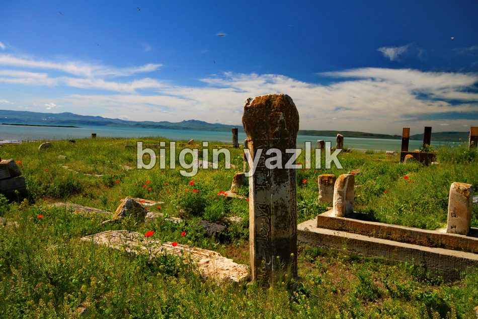
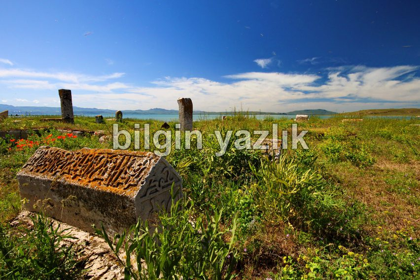

Van Gölü Havzası · 30 Mayıs 2013
Çelebibağı Selçuklu Mezarlığı
Van’ın Erciş ilçesinin Van gölüne kıyı kesiminde kurulmuş olan bu mezarlığın adı Çelebibağı Selçuklu Mezarlığı’dır. Selçuklulara ait olan bu mezarlıkta yeni mezarlara da rastladım. Van Gölü’nün eşsiz güzelliğini seyredebileceğiniz bu muazzam mezarlık, tarihe açılan bir kapı gibi. Mayıs ayında yaptığım ziyarette çok sayıda sinek mezarlığı basmış durumda idi, öyle ki bazı yerlerde yürüyemedik. Mezar taşlarındaki motifleri görmenizi tavsiye ederim.


Bu yazı taliyol arşivinden taşınmıştır. · özgün kayıt